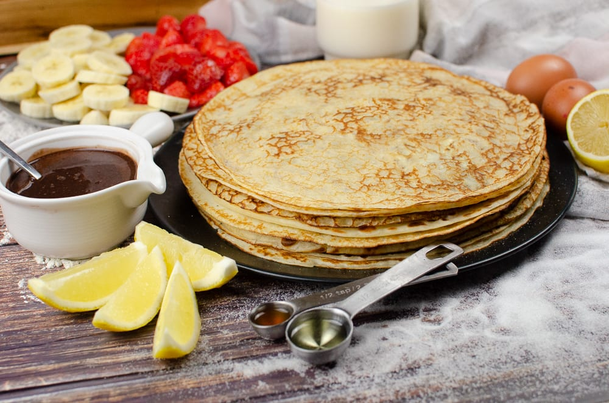

Thin Pancakes

Description
Learn how to make the perfect thin pancakes.
Easy to do tips and tricks to get delicious and lacy pancakes.
Quick and simple recipe.
Ingredients
- Milk - 500ml
- eggs - 3pcs
- flour - 200gr
- oil - 2 table spoons
- sugar - 2 table spoons
- salt - 1/2 tea spoon
Steps
- Mix eggs, sugar and salt in a bowl
- Add milk to the bowl and mix
- Add flour to the bowl and mix
- Add oil to the bowl and mix
- Heat the pan on the medium fire
- Start making pancakes using as less dough as possiple
Note: add some oil on the pan before making every pancake